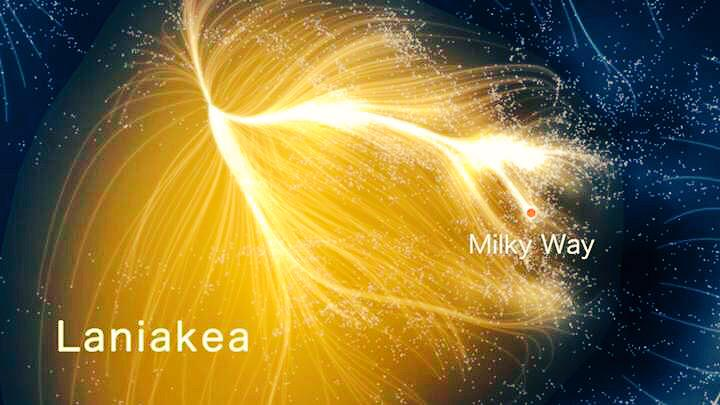

The Universe
Scroll down to learn more about our universe.
The Big Bang Theory

The Big Bang Theory is the most widely accepted theory about how the universe came to
be. Obviously, we can't go back in time and see exactly what happened, but astronomers
have seen evidence of the Big Bang's "echoes" and have developed formulas and models
in order to find out more about the creation of the universe.
The theory claims that the universe was originally condensed into a single point, that
was infinitely dense and hot. Suddenly, though, this point exploded and expanded faster
than the speed of light, and eventually came to an end. The universe heated until it
could produce particles, which eventually formed neutrons, electrons, and protons. These
are the building blocks of the world as we know it. This all happened within a second, heating
the universe to incredible amounts, but visible light still didn't exist in the universe.
It would take hundreds of thousands of years for the universe to cool enough for neutral
atoms to be formed. Then, photons were able to attach to these atoms and create visible light.
This is naturally a severe oversimplification of the Big Bang Theory, as the actual theory
is extremely complicated and scientific. However, there are still many unanswered questions
about the Big Bang, which scientists have been working to answer to this day.
Learn more about the big bang theory at the Space.com website.
Go back to the Explore page.
Or, scroll up or down to learn about other bodies in space.
The Laniakea Supercluster

Galaxies aren't scattered across the universe at random. Rather, they clump together
in groups, which in turn clump together in structures called superclusters. The supercluster
that our galaxy is in is called the Laniakea Supercluster. Our supercluster is a group of
about 100,000 different galaxies, and it stretches out for 520 million light years.
Some of the groups of galaxies in the Laniakea supercluster are the Hydra-Centaurus
supercluster, the Virgo supercluster (where the Milky Way is), the Southern supercluster,
and the Pavo-Indus supercluster. These groups were initially thought to be their own
supercluster, as seen in their names, but were found to be just a part of a larger
supercluster, the Laniakea, in a 2014 study.
Despite what it may seem, though, these supercluster structures are not actually
gravitationally bound to each other. In fact, over the next few billions of years,
the Laniakea supercluster will eventually drift apart. Any groups already bound to
each other will stay together, but those that haven't already bound never will.
Those galaxies will simply drift away into the endless ocean of our universe.
Learn more about the Laniakea Supercluster at the Space.com website or Forbes
Go back to the Explore page.
Or, scroll up or down to learn about other bodies in space.
Dark Matter

Dark matter cannot be seen, and technically we don't know if it actually exists. However,
we assume that it does because without it, the universe simply wouldn't make any sense. After all,
dark matter theoretically makes up 80% of the universe. It doesn't emit light or energy, and thus,
it is completely invisible to any sensors.
However, we know that something is out there despite all that. The movement of the stars
show that there is more mass out there than can be seen, and if there was no hidden mass out there,
clusters of galaxies should have flown apart based on their visible mass. Because of this, most
agree that dark matter does truly exist.
As far as we know, dark matter is spread across the universe in a net-like fashion. Galaxy clusters
form where the fibers of the "net" intersect. Scientists have been working in order to understand
any more about this mysterious invisible matter, and efforts to decipher what it truly is are still
underway.
Learn more about dark matter at the Space.com website
Go back to the Explore page.
Or, scroll up or down to learn about other bodies in space.